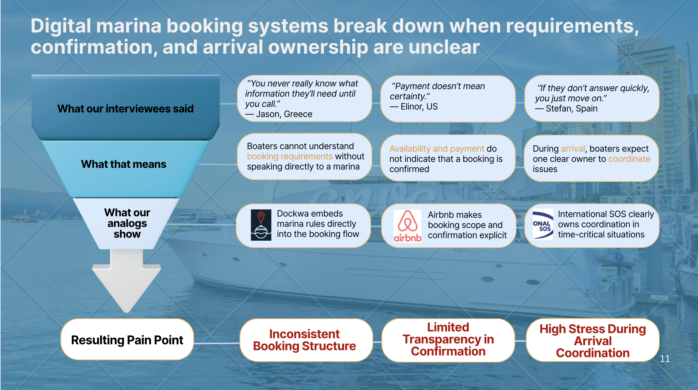
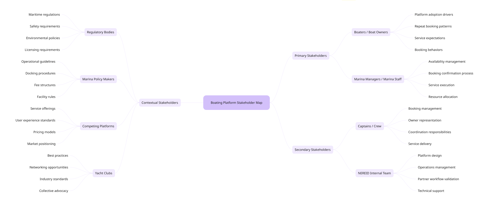
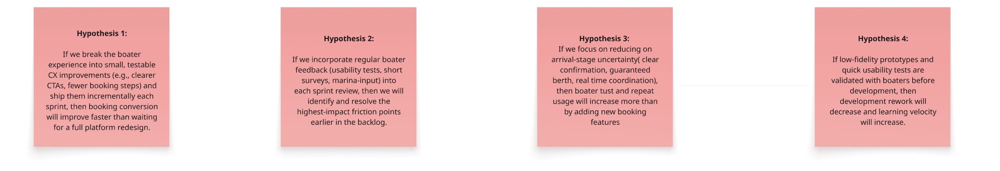
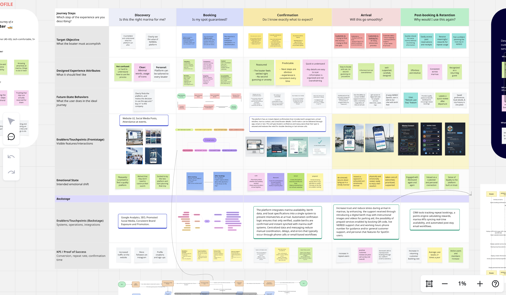

NEREID
A redesign of the boater booking experience for NEREID, a marina management platform, built from interviews with boaters in five countries and developed by a team of six in a client engagement for my MS in Management program, spring 2026.
Boaters booking a slip online kept picking up the phone anyway, because nothing in the process made them certain their spot was real or that they would know what to do when they arrived. We traced that doubt to three trust breakdowns and redesigned the experience around them, for the boaters and for the marinas that serve them, and the client is now building our recommendations into its platform.
The challenge
NEREID builds the software marinas use to run their operations, including how boaters find and book a berth, and it asked us to help more boaters discover, trust, and use that booking experience. Boaters were still calling marinas directly to check requirements, to confirm that a booking had gone through, and to ask what to do when they arrived. The question was why, and what would need to change for a confirmation on screen to feel as certain as a conversation with the marina.
"If it's important, I'll always call, even if I've booked digitally." Lucas, boat owner, US
What we found
We interviewed 10 boat owners in Greece, the US, Italy, Spain, and Guatemala, including one who runs marine facilities, and studied how other services handle the same moments. Three breakdowns came up again and again.
Unclear requirements
The booking structure changed from marina to marina, so boaters could not tell what information they needed before they started.
"You never really know what information they'll need until you call."Jason, Greece
Uncertain confirmation
A confirmation did not show enough detail to feel final, so boaters called to make sure their slip was really held.
"Until I'm tied up, I don't really feel it's confirmed."Elinor, US
Stressful arrival
Nobody clearly owned the arrival, so boaters approached an unfamiliar marina without knowing where to go or who to contact.
"The stressful part is when you're arriving and you don't know exactly where to go."Jennifer, US
Other services showed us what good looked like: Dockwa builds marina rules directly into its booking flow, Airbnb makes the scope of a booking explicit at confirmation, and International SOS clearly owns coordination when timing matters. NEREID needed to borrow from all three.

How we synthesized the interviews into three trust breakdowns.
Designing for the marina too
Every call a boater makes lands on a marina's staff, and one boat owner we interviewed put the constraint plainly: "Digital helps, but only if it matches real operations." So we designed what happens behind the screen as carefully as what the boater sees. In our recommendation, the platform connects each marina's availability, berth data, and boat specifications in one system, so that only a berth that actually fits the boat can be confirmed, double bookings are locked out, and the confirmation syncs directly with the marina's own systems.
We defined success for both sides: faster confirmations and fewer last-minute cancellations for boaters, and fewer confirmation calls and emails for marina staff.
Who we designed for
We built one persona from the interviews: an experienced owner who is comfortable with technology and still reaches for the phone whenever a booking feels uncertain.
The boater
Experienced boat owner, comfortable with technology, five or more trips a year
Goals
- Clear, streamlined information
- Accurate availability in real time
- Knowing the marina's amenities and what to do nearby
Frustrations
- Juggling too many apps and channels
- Not knowing the arrival steps in advance
- Doubting that the slip is actually reserved
Core tasks
- Finding a slip that fits the boat
- Navigating the marina on arrival
- Planning the full trip
The journey, stage by stage
We mapped the full experience in five stages and asked what a boater needs to feel sure of at each one.
What we designed
Three changes, each answering one of the breakdowns we found.
Homepage redesign
We restructured the homepage so that the value of the platform is clear upfront, and added a way for boat owners to list their own slips, giving them a second way into the marketplace.
Verified booking flow
An instant digital confirmation with the berth assignment, arrival window, and marina contact synced in real time, so that a confirmed booking feels certain.
Arrival Mode
A single place for the slip location, QR check-in, marina contact, and real-time support before and during docking, replacing the scattered calls that our interviews pointed to as the biggest source of stress on arrival.
What it would take
We costed the plan for a lean team, at about €80,000 to €95,000 to build and €150,000 to €175,000 a year to run, covering the website, a hybrid support model that pairs AI chat triage with a small staffed team, and an in-person rollout at the first ten marinas. We then ranked every feature by impact and effort, so that NEREID could start with the changes that build confidence fastest, such as instant confirmation, the QR dock pass, and Arrival Mode, and hold heavier work, like a full real-time integration with every marina's systems and expansion beyond Greece, until the model was proven in its home market.
Behind the work
A few of the tools we used to decide what to build and in what order.



How I contributed
I was the team's Product Discovery Lead, responsible for how boaters first find and understand NEREID. Early on, our only inputs were the client's own view and desk research, so I asked the client to connect us with its customers, brought in boat owners from my own network in Greece, and we widened the pool to users of similar platforms abroad. Those conversations changed our conclusion: we had expected the problem to be software complexity, and the interviews kept pointing to the uncertainty boaters felt before they arrived.
From there I built the boater persona, reworked the homepage information architecture and copy, shaped the Arrival Mode concept, and helped present our recommendations to the client.
"Theodora is the team leader. I greatly admire her leadership and personal abilities." Qianping Tao, teammate
"Her creative thinking and iterative approach made the overall assignment easier to complete and with real quality." Dhruv Jain, teammate
This project showed me how much of a customer's trust depends on knowing what will happen next, and how often the moment that decides whether someone comes back is one the business rarely sees, like a boater approaching an unfamiliar marina for the first time.